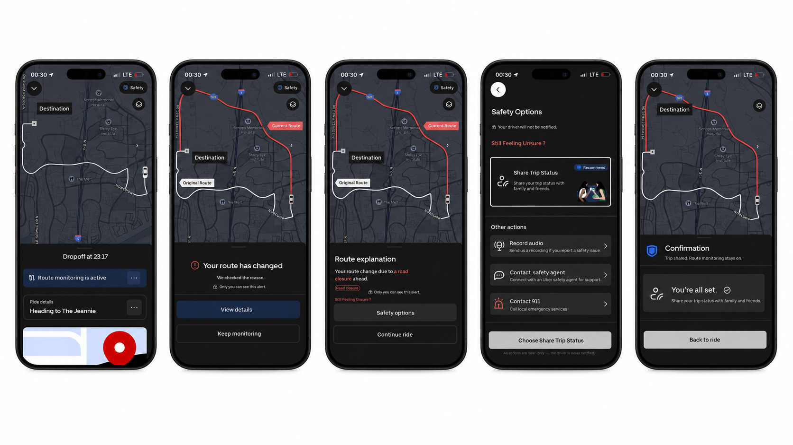

Finding 01
Nighttime rides create stronger anxiety in unfamiliar environments.
Riders feel less confident when they cannot easily judge whether a route change is expected or suspicious.
Portfolio Case Study
A focused Uber safety extension designed to help women who are not fluent in the local language feel more confident during nighttime rides in foreign or unfamiliar places.
The project explores how route monitoring, private alerts, and low-pressure safety actions can help riders understand unexpected route changes without immediately escalating the situation.
UX Research / Product Strategy / App Design / Interaction Design / User Testing
Figma / User Interview / Usability Testing
Nighttime Rides / Route Confidence / Language Barriers / Safety Support / Rideshare Experience
Rideshare services can feel more stressful during nighttime rides when riders are in foreign or unfamiliar places, especially when they are not fluent in the local language.
Route uncertainty, unfamiliar streets, and the language barrier around driver communication can quickly turn into anxiety, hesitation, and a reduced sense of control.
For Uber, supporting this user group is not only a usability improvement, but also a trust and safety opportunity. The experience should provide low-pressure support before the rider feels forced to escalate.
The design challenge centers on clarity, confidence, and discreet support during the ride.
Women who are not fluent in the local language and need to use rideshare services alone at night in foreign or unfamiliar places need more confidence and clarity during rideshare interactions because navigational uncertainty can quickly turn into stress and fear, leading to hesitation to ask for help.
The research showed that riders want more context before asking for help, especially when they are unsure whether a route change is normal.
"At night, it is hard for me to tell whether a detour is normal or unusual."
Eileen represents riders who need reassurance and low-pressure support while traveling alone at night.
Persona
Profile
Eileen often uses Uber alone at night in foreign or unfamiliar places.
The product opportunity is not only emergency support. It is helping riders understand the ride before fear takes over.
Riders feel less confident when they cannot easily judge whether a route change is expected or suspicious.
Users may avoid asking questions directly, even when they feel uncertain.
When riders cannot compare the original route with the current route, they feel less able to understand what is happening.
Some riders share their trip, check external maps, or contact friends instead of using the app's built-in safety support.
The final direction is a focused Uber extension that keeps support private, contextual, and easy to act on.
The app design keeps the Uber dark-mode context inside the screenshot while the portfolio page stays minimal, white, and editorial.
The route monitoring flow helps riders understand unexpected route changes, compare the original and current route, and choose a discreet safety action without immediately escalating the situation.

Testing helped refine the balance between realistic Uber behavior, route clarity, and safety support.
It looked more like the real Uber app and matched the late-night ride context better.
Showing the original route and current route with different colors helped participants quickly understand what changed.
These screens gave users context, reassurance, and clear next steps.
Participants suggested making the original route label more visible and avoiding too many route options or risk indicators.
Participants generally found the prototype clear, realistic, and helpful for nighttime rides, especially the dark-mode interface, route comparison, and AI route explanation.